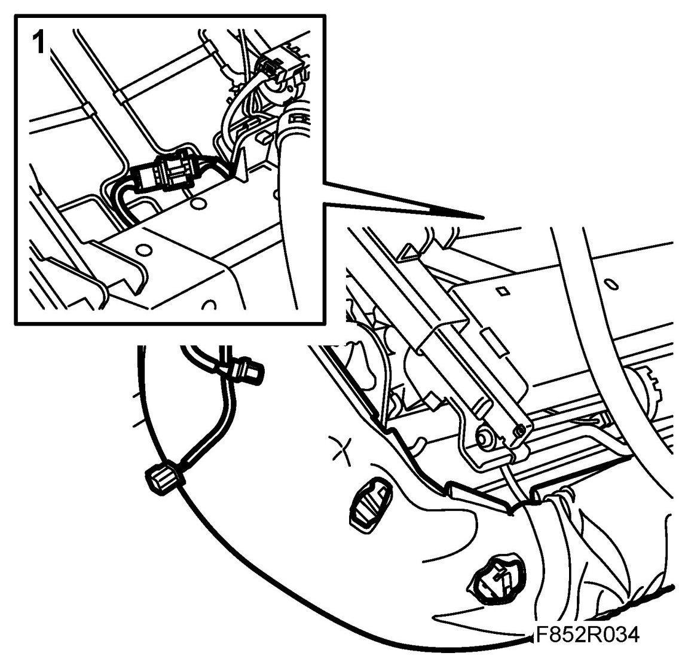
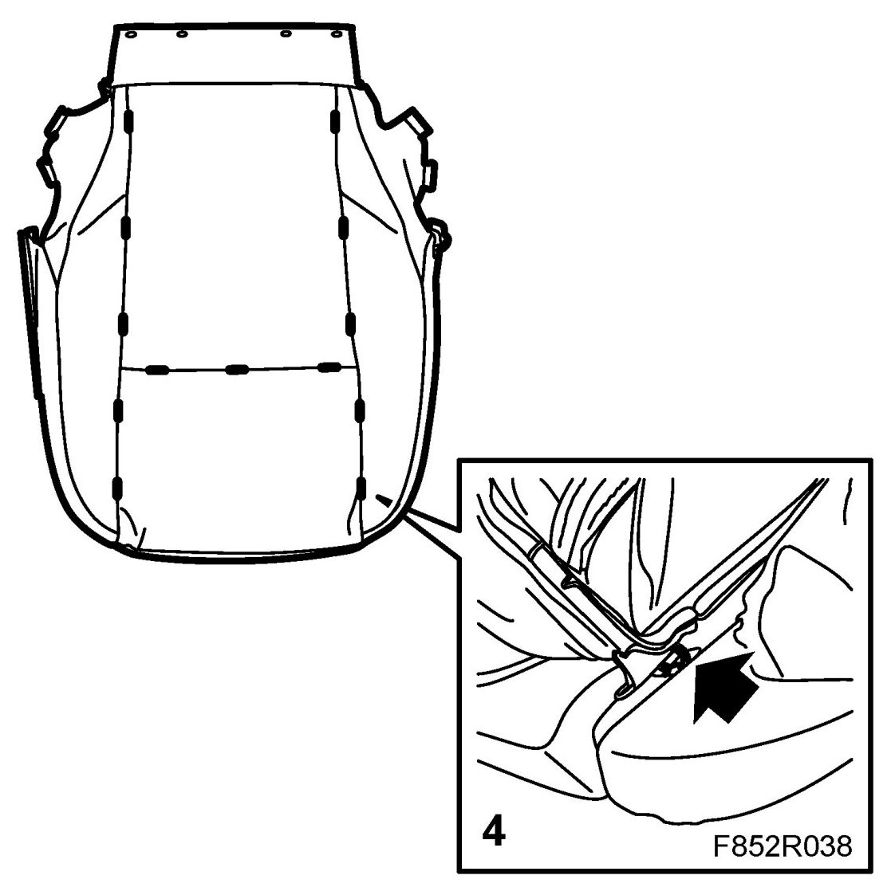
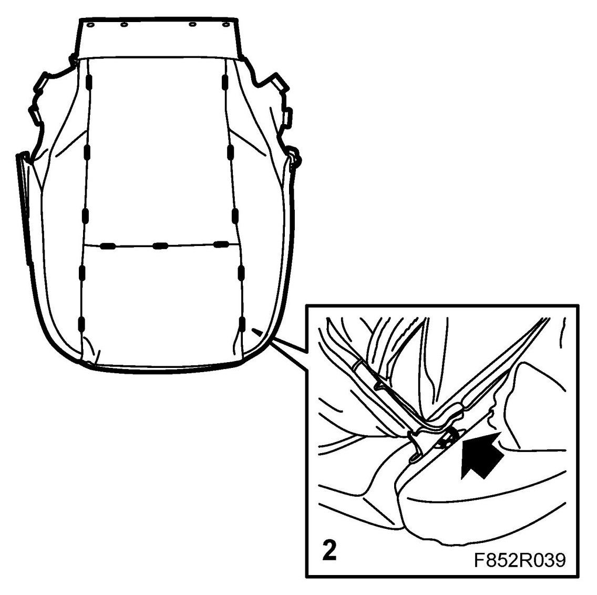
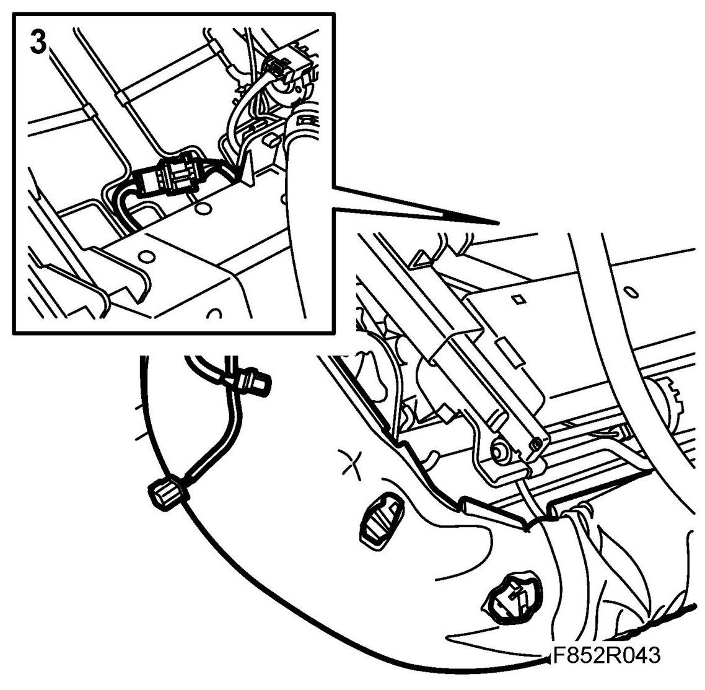

Upholstery, Front Seat Cushion
Upholstery, Front Seat Cushion
Removing
1. Remove the seat.
2. Remove the seat cushion.
3. Unplug the heating pad.

4. Cut the staples holding the upholstery to the foam cushion.

5. Lift off the upholstery.
Fitting
1. Fit the new cushion upholstery to the foam cushion.

2. Attach the upholstery to the foam cushion using staples 84 71 062 Fitting kit, upholstery.
3. Plug in the heating pad.

4. Fit the seat cushion.
5. Fit the seat.